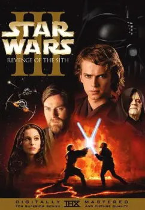
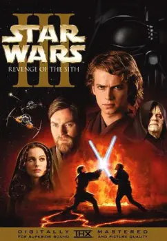

Une féministe au cinéma

Durant les cinquante dernières années, le féminisme a pris beaucoup plus d’importance chez les femmes, et les hommes aussi. Le féminisme est également présent chez les célébrités, les artistes, les chanteuses ou encore les actrices. De nombreuses personnalités ont pris position dans la lutte féministe. Cela a commencé avec des actrices comme Delphine Seyrig dans les années 70. Et continue aujourd’hui encore avec par exemple Emma Watson, Angelina Jolie ou encore Natalie Portman, c’est d’ailleurs de cette dernière que nous allons parler dans cet article.
Neta-Lee Hershlag

Natalie Portman en 1994 et 1999
Neta-Lee Hershlag est née le 9 juin 1981 à Jérusalem, elle est la fille d’un médecin israëlien, Avner Hershlag, et d’une américaine, Shelley Stevens. Alors âgées de 3 ans, les parents de Natalie Portman décident de quitter Jérusalem pour aller s’installer dans l’État du Maryland au États-Unis pour que son père puisse finir sa formation. Après quelques années, son père Avner a enfin son droit de pratiquer aux États-Unis et décroche un poste à Long Island dans l’État de New York. Alors qu’elle est âgée de 10 ans, Natalie Portman est approchée par une marque de cosmétiques, Revlon, pour une campagne publicitaire. Mais elle décline l’offre et dit qu’elle souhaite faire du cinéma, les agents l’aident alors à trouver des auditions.
Le début du succès

Natalie Portman et Jean Reno dans Léon
Deux ans plus tard, en 1996, elle joue au côté de l’immense Al Pacino dans lequel elle incarne la fille de ce dernier. Ainsi que dans la comédie où elle incarne la fille de se dernier. Ainsi que dans la comédie dramatique Beautiful Girls. En 1997 elle joue dans 2 films, de Woody Allen et Tim Burton. Mais aussi dans l’adaptation théâtrale du Journal d’Anne Frank, une action forte étant donné qu’elle est elle-même juive et que ses arrières-grands-parents sont décédés à Auschwitz.


Affiche de Star Wars épisode I
C’est en 1997 que Natalie Portman joue également dans un film qui va propulser sa carrière à un autre niveau. Il s’agit bien évidemment du film Star Wars, épisode I : La Menace fantôme, le premier volet de la prélogie de la saga Star Wars de Georges Lucas, dans lequel elle incarne Padmé Amidala, l’un des personnages principaux du film. Un rôle qu’elle reprend pour les deux volets suivants.
Une carrière croisée aux études
En parallèle de cela Natalie Portman continue ses études et intègre la très prestigieuse Université d’Harvard et s’installe à Londres pour étudier la psychologie en 1999. La même année sort le film Ma mère, moi et ma mère dans lequel elle incarne une fille qui entretient une relation conflictuelle avec sa mère. Un film qu’elle avait dans un premier temps refusé à cause d’une scène à caractère sexuel, mais finira par accepter après une réécriture du script. Un choix qui fut le bon étant donné que ce film lui à permis d’être sélectionné aux Golden Globes de 2000 dans la catégorie Meilleure actrice dans un second rôle. Elle continue ses études à Harvard jusqu’en 2003 et à côté joue dans plusieurs film dont Star Wars, épisode II : L’Attaque des clones, et Retour à Cold Mountain avec Nicole Kidman. Ainsi que dans la pièce La Mouette au côté de Meryl Streep. Après l’obtention de son diplôme en 2003 elle se lance à plein temps dans sa carrière d’actrice et va enchaîner les succès comme Closer, entre adultes consentants, Star Wars, épisode III : La Revanche des Sith, etc… Cela jusqu’à la sortie en 2011 du film qui est probablement son plus grand succès critique, Black Swan. Ce film lui a valu 24 récompenses, dont l’Oscar de la meilleure actrice en 2011 ou encore le Golden Globe de la meilleure actrice dans un film dramatique. Cela ne marquant évidemment pas la fin de sa carrière.
Affiche promotionnelle de Black Swan
Une féministe avant tout !
Avec son impressionnante carrière Natalie Portman est sans conteste une femme forte des dernières années. Mais elle est également une féministe assumée, elle fait partie des actrices qui ne veulent pas utiliser leur corps inutilement dans des scènes sexuelles, elle désire se faire un nom grâce à son talent et non son corps. Mais surtout, elle a plusieurs fois revendiqué son féminisme, comme en novembre 2013 quand elle a déclaré “L’erreur de Hollywood est de croire que si l’on réalise une histoire féministe, la femme défonce tout et gagne. Cela n’est pas féministe, c’est macho”. Ou encore aux Golden Globes 2018 lorsqu'elle a dénoncé l’absence de femme pour l’award du meilleur réalisateur. Natalie Portman a même créé une équipe de football féminine en compagnie de nombreuses

Natalie Portman au féstival de Cannes 2015
célébrités comme Serena Williams, Eva Longoria et Jessica Chastain, le club nommé Angel City Football Club devrait faire son entrée dans le championnat en 2022. Une féministe assumée et engagé et cela depuis de nombreuses années.

 
